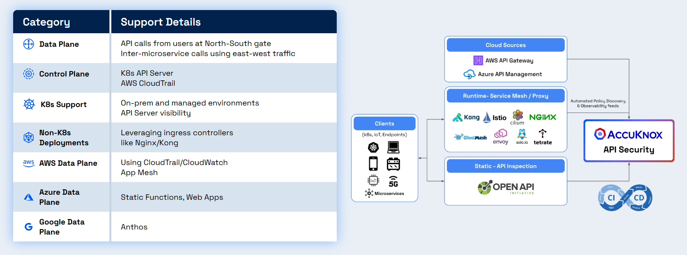
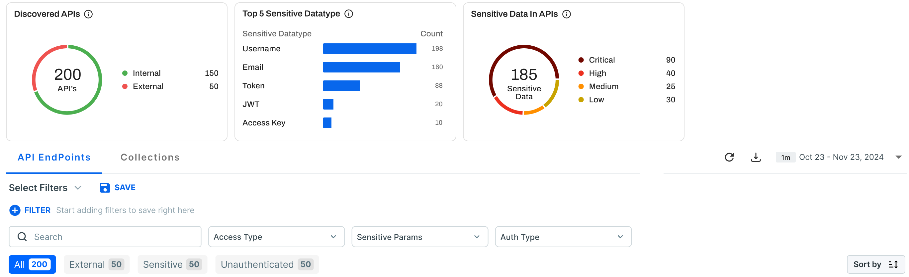
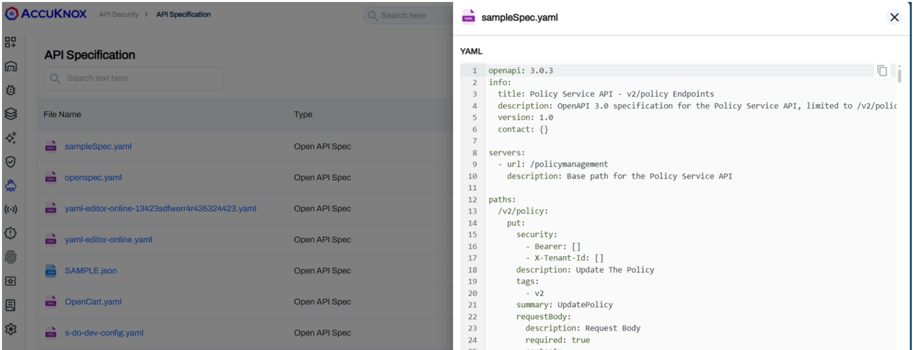
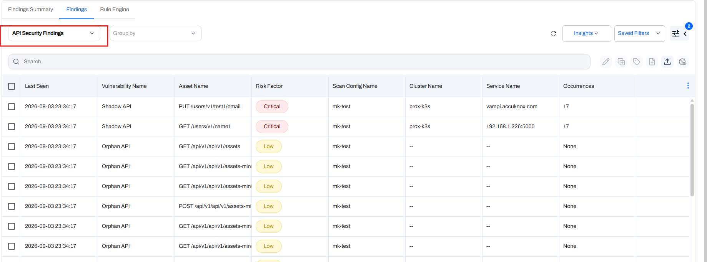
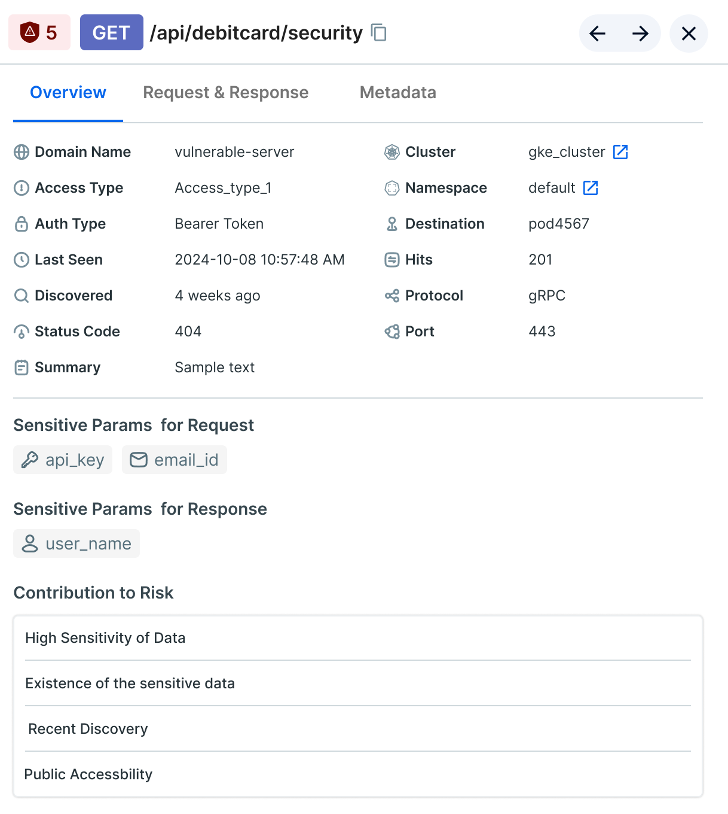
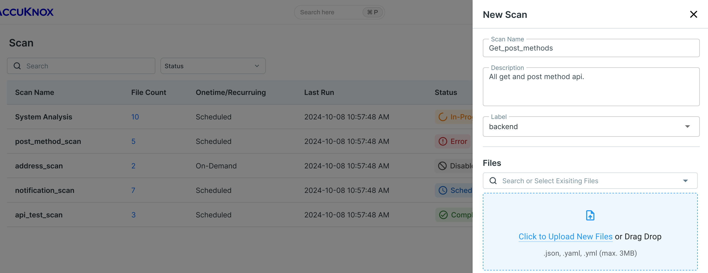
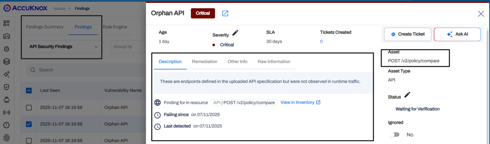

API security best practices cheat sheet
Find every
API before an
attacker does
The do's and don'ts for six API security practices, from shadow API discovery to the ticket that closes each finding.
The do's and don'ts for six API security practices, from shadow API discovery to the ticket that closes each finding.
Well over half of the dynamic traffic on the Cloudflare network is API traffic, per its 2024 API security report. Most teams cannot name every endpoint behind that traffic, so attacks land on routes nobody watches.
rise in the average number of daily API attacks, year over year.
more API endpoints found by machine learning discovery than teams reported on their own.
of organizations are very confident that their API inventory is accurate.
Sources: Salt Security, H2 2025 State of API Security Report, salt.security. OWASP API Security Top 10 2023, api-security.owasp.org. Akamai 2026 SOTI release, akamai.com.
Connect your gateways, set a specification baseline, then let AccuKnox compare the two. Each practice catches what the one before it misses.

API Security data sources, from cloud gateways and service meshes to OpenAPI specs. help.accuknox.com/integrations/api-overview/
AccuKnox reads gateway and mesh logs and lists every endpoint it sees, with method, path, exposure and auth type.

API Security inventory with discovered APIs and sensitive data types. help.accuknox.com/use-cases/api-security/
API Security builds the inventory from gateway logs with no code change, and creates a collection from each host endpoint on its own. Connect a traffic source
A scan compares observed endpoints against the spec, so the spec decides what counts as drift.

API Specification page with an OpenAPI 3.0 file open. help.accuknox.com/how-to/api-security-onboarding/
API Security stores each spec under API Security > API Specification, and generates an OpenAPI spec from traffic for an API with no documentation. Upload your first spec
A spec scan sorts each endpoint into Shadow, Zombie, Orphan or Active, with request and response detail.

API Security Findings with Shadow API and Orphan API rows. help.accuknox.com/how-to/api-security-onboarding/
Shadow, zombie and orphan detection addresses OWASP API9:2023 Improper Inventory Management. Each finding shows the request, the response and the occurrence count. Read the finding types
Each endpoint lists the sensitive parameters AccuKnox found in its request and in its response.
The Contribution to Risk panel names why an endpoint ranks high, such as high sensitivity of data, recent discovery or public accessibility.

Endpoint detail with sensitive params and risk factors. help.accuknox.com/how-to/api-security-onboarding/
API Security classifies sensitive data in each request and response, and labels each endpoint as internal or external. Open endpoint telemetry
A spec scan finds drift. The API Scan collector sends active tests to a running target URL.

Scan list and the New Scan form. help.accuknox.com/how-to/api-security-onboarding/
Spec scans run on demand or on a schedule. The API Scan collector takes its endpoints from an uploaded spec, a collection or a spec URL. Set up both scan paths
Each API finding opens with Create Ticket and Ask AI, and a Rules Engine rule can file the ticket for you.

Orphan API finding with Create Ticket and Ask AI. help.accuknox.com/use-cases/rules-engine-ticket-creation/
Rate limits apply per user or IP per endpoint, per user or IP across the app, or per service, with a Block or Alert action. Automate ticket creation
Read each row. Where the gap is true for you, take the first step this week.
| If this is true | AccuKnox capability | First step |
|---|---|---|
| Nobody can list every API endpoint in production | API inventory | Connect your gateways and service mesh as traffic sources |
| Specs are missing or out of date | API Specification and spec generation | Upload the OpenAPI file, or generate one from traffic |
| Old API versions still answer calls | Shadow, zombie and orphan API detection | Run a spec scan on each collection |
| Nobody knows which APIs return PII or tokens | Sensitive data classification | Filter the inventory by Sensitive Params |
| APIs ship with no test against the running service | API Scan collector | Add the collector for one staging target |
| API findings sit in a queue with no owner | Rules Engine and rate limiting | Create a ticket rule for Critical API findings |
Book a demo to see the inventory, the spec scan and the finding workflow in the AccuKnox console. Bring your gap check.
Book a demo Read the API security docsKuppingerCole CNAPP Leadership Compass features AccuKnox Zero Trust CNAPP.
Best Practices recognitions in 2026, one global and one for Asia Pacific.
API traffic integrations, from AWS API Gateway to Azure API Management.
Sources: accuknox.com/analyst-recognition and help.accuknox.com/integrations/api-overview